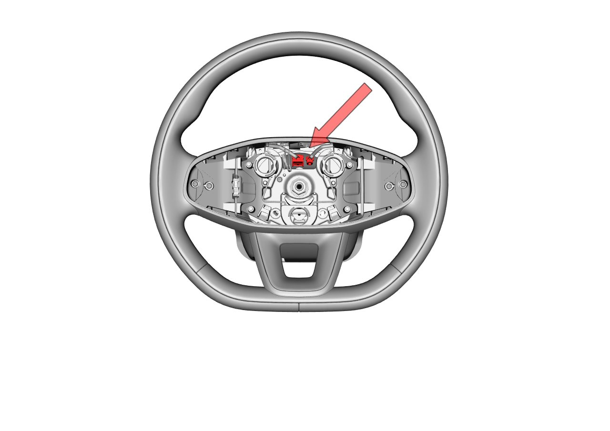
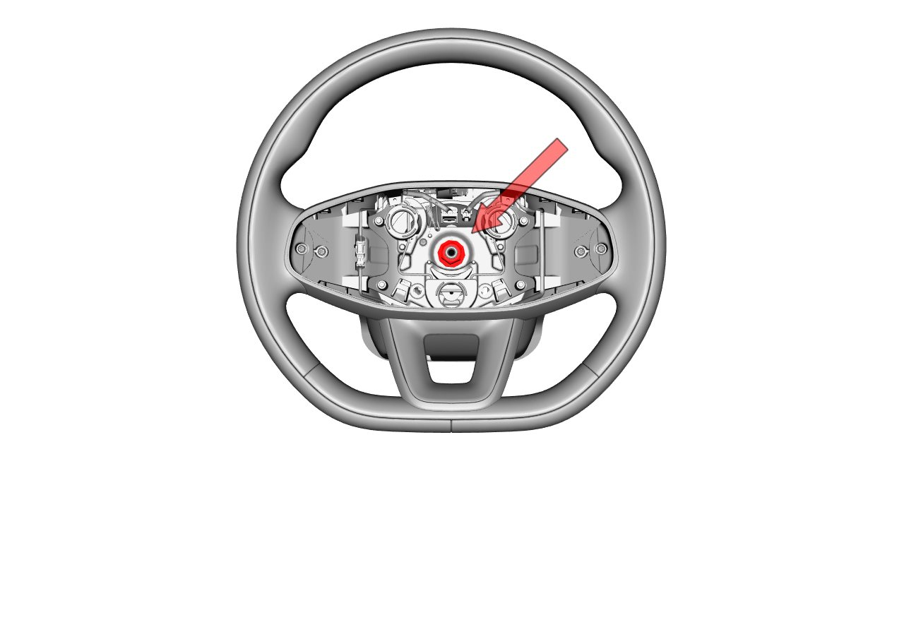

拆卸
首先拆除驾驶员正面安全气囊，参照驾驶员正面安全气囊拆装方法
拆卸方向盘前，确保方向盘处于中间位置，车轮处于正前方位置，然后锁止方向盘。
拆卸方向盘时，注意转向管柱和方向盘的标记。若转向管柱上没有标记，在拆卸方向盘前用记号笔在转向管柱上做标记。
不要试图用锤子敲击轴的方式拆卸方向盘。这样会损坏转向柱。
将车辆熄火或下电，置于静止状态。
拆卸驾驶员气囊。
参考： 驾驶员正面安全气囊
将方向盘上与旋转连接器配合的接插件拔出。

将方向盘锁紧螺母松开，直至剩下2-3牙螺纹。工具：套筒（18）。

前后左右晃动方向盘直至完全脱开。
安装
安装方向盘前，确保车轮处于正前方位置。安装方向盘时保证方向盘位置与转向管柱上标记的位置对齐。
安装顺序与拆卸顺序相反。工具：套筒（18），扭矩：33±4N.m。安装后需要做四轮定位保证方向盘对中